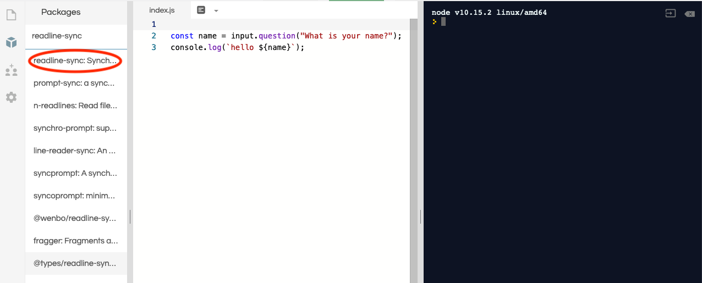
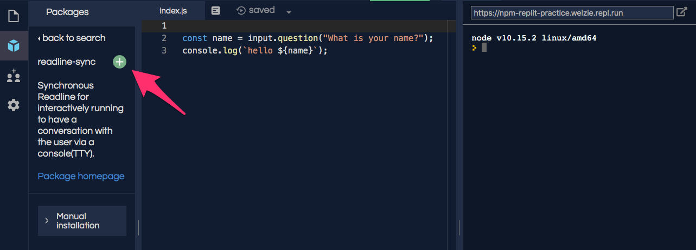
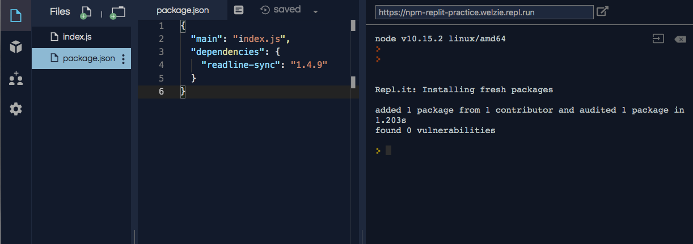

13.3. NPM¶
NPM, Node Package Manager, is a tool for finding and installing Node modules. NPM has two major parts:
A registry of modules.
Command line tools to install modules.
13.3.1. NPM Registry¶
The NPM registry is a listing of thousands of modules that are stored on a
remote server. These can be required and downloaded to your project. The
modules have been contributed by other developers just like you.
There is an online version of the registry where you can search for a module by name or desired functionality.
Example
Go to online NPM registry and enter "readline-sync" into the search packages input box.
An exact match appears as the first result. That is the readline-sync
module we required. Clicking on the first result leads to the NPM page
that describes the readline-sync module.
On the details page you will see:
Usage statistics (how often the module is used)
Instructions on how to use the module (example code)
Version information
The author(s)
Sourcecode repository
13.3.2. NPM Command Line Interface (CLI)¶
The NPM command line tool, CLI, is installed with Node. The NPM CLI is used in a computer's terminal to install modules into a Node project. There is no need to panic! You will learn how to use the terminal in a later chapter.
For now, recall that we coded many Node projects inside of repl.it, which allows us to simulate a development environment WITHOUT having to install any software on our computers. As such, repl.it automatically handles much of the work of installing external modules.
13.3.3. NPM CLI With repl.it¶
Login to your repl.it account, fork this example, and then follow these instructions:
Example
We will use the repl.it interface to add new modules to a project.
Click on the Packages icon in the left menu (it looks like a box).
Enter "readline-sync" in the search box.
Click on the top matching result.
Verify this is the module you want, then click on the plus icon.
Clicking the plus icon adds a
package.jsonfile that includes a dependency listing forreadline-sync.
Even though we added readline-sync to package.json, our code still
fails because input is not defined. The final step of requiring
readline-sync is to assign it to a variable.
Add const input = require("readline-sync"); to line 1.
1 2 3 4 | const input = require("readline-sync");
const name = input.question("What is your name?");
console.log(`hello ${name}`);
|
Note
So far, we used repl.it without a package.json file. That worked because
repl.it tries to make the development experience as easy as possible. It
hides some details in order to let us pay more attention to our code.